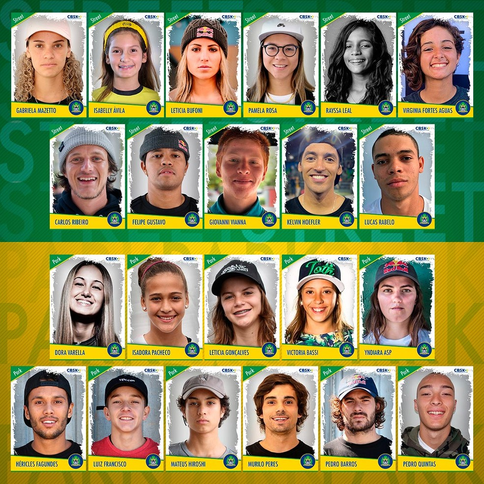

Rayssa Leal será a atleta mais jovem da história do Brasil nas Olimpíadas
Skatista de 13 anos, que confirmou a vaga para Tóquio na última sexta-feira, chegará nas Olimpíadas como favorita à medalha no street

Maranhense supera nomes como Letícia Bufoni e Pâmela Rosa, encanta o público na Califórnia e se torna a mais jovem skatista a faturar uma etapa da Street League Skateboarding.
Membro da seleção brasileira, a skatista é um dos destaques da modalidade no país. E sua fase é espetacular. Esse ano, ela venceu o Far’N High, na França, e ainda foi bronze na Street League Skateboarding (SLS), em Londres. A atleta ficou conhecida como "Fadinha do skate" por andar vestida de fada com apenas 7 anos. A grande meta para 2021 é ganhar os Jogos Olímpicos de Tóquio.
Brasileiras garantem vaga no skate dos Jogos de Tóquio
Dora Varella, Isadora Pacheco e Yndiara Asp representarão o Brasil
As brasileiras Dora Varella, Isadora Pacheco e Yndiara Asp garantiram vaga na próxima edição dos Jogos Olímpicos. As integrantes da seleção de skate, na modalidade park, garantiram, na última sexta-feira (21), presença em Tóquio, ao terminarem o Dew Tour (última oportunidade de classificação para as Olimpíadas) entre as 20 primeiras colocadas do evento realizado em Des Moines (Estados Unidos).
Dora Varella, Isadora Pacheco e Yndiara Asp representarão o Brasil.
Após a classificação, a catarinense Yndiara Asp destacou (em depoimento à Confederação Brasileira de Skate) os desafios de garantir a vaga em meio ao contexto da pandemia do novo coronavírus (covid-19): “Estamos desde 2018 nessa corrida olímpica. Muita coisa aconteceu. Pandemia. Ficamos um ano inteiro sem competir. De repente surge essa competição como a última classificatória. Foi um mix de emoção, de tensão, de nervosismo […]. E consegui. Nossa, deu um alívio e uma felicidade muito grande de fazer o que eu vim fazer, o meu propósito”.
O Brasil continua participando do Dew Tour, tendo ainda a possibilidade de classificação para os Jogos de Tóquio no park masculino e no street, tanto no masculino como no feminino.
Rumo à Olimpíada, confederação anuncia seleção brasileira de skate agora com 22 atletas
Seleção brasileira de skate tem inclusão de Lucas Rabelo e conta com 22 atletas para sequência das classificatórias olímpicas para os Jogos de Tóquio no ano que vem
A Confederação Brasileira de Skate anunciou a manutenção de toda a seleção que tenta a classificação para os Jogos Olímpicos de Tóquio, que foram adiados para 23 de julho de 2021. Além dos 21 atletas que já estavam entre os selecionados, o skatista Lucas Rabelo está de volta ao time, que agora conta com 22 atletas. O skate vai estrear em uma edição da Olimpíada ano que vem e cada país pode levar até três atleta por modalidade (park e street) e por naipe (masculino e feminino). Assim, o Brasil tem chance de classificar 12 atletas e com muitos favoritos a conseguir medalhas.
- Como o encerramento das classificatórias para as Olimpíadas aconteceria em maio, o orçamento da seleção em 2020 tinha previsão para 12 atletas de junho até dezembro. Número que é nosso limite e também meta de classificados para Tóquio. Tivemos que reestruturar nosso planejamento, mas conseguimos manter toda a estrutura da seleção, que ainda ganhou mais um membro. Com certeza é uma vitória importante para o skate brasileiro. A próxima etapa agora é retomar o planejamento individualizado de cada integrante da seleção - destaca Eduardo Musa, presidente da confederação.
Lucas Rabelo abriu a segunda janela classificatória para Tóquio com o terceiro lugar do pódio no STU Open, em novembro de 2019, no Rio de Janeiro. O resultado colocou o skatista no top 20 do ranking mundial.
- O adiamento das Olimpíadas abriu um novo ciclo para a seleção brasileira. Por ser mais do que justo, a posição do Lucas Rabelo no ranking permitiu o retorno dele - explicou Musa.
Após o STU Open no Rio, todas as competições previstas para o primeiro semestre de 2020 foram suspensas pela World Skate, entidade que gere o esporte mundialmente. O retorno das competições ainda não tem previsão. A entidade já comunicou que um eventual calendário de disputas será anunciado com 60 dias de antecedência do primeiro evento.
SELEÇÃO BRASILEIRA DE SKATE
Park feminino
Dora Varella, Isadora Pacheco, Yndiara Asp, Victoria Bassi e Leticia Gonçalves;
Park masculino
Luizinho Francisco, Pedro Barros, Pedro Quintas, Mateus Hiroshi, Murilo Peres e Héricles Fagundes;
Street feminino
Pamela Rosa, Rayssa Leal, Leticia Bufoni, Gabriela Mazetto, Virginia Fortes Águas e Isabelly Ávila;
Street masculino
Kelvin Hoefler, Giovanni Vianna, Carlos Ribeiro, Felipe Gustavo e Lucas Rabelo.